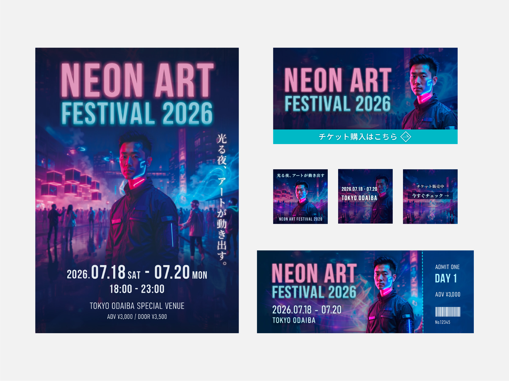
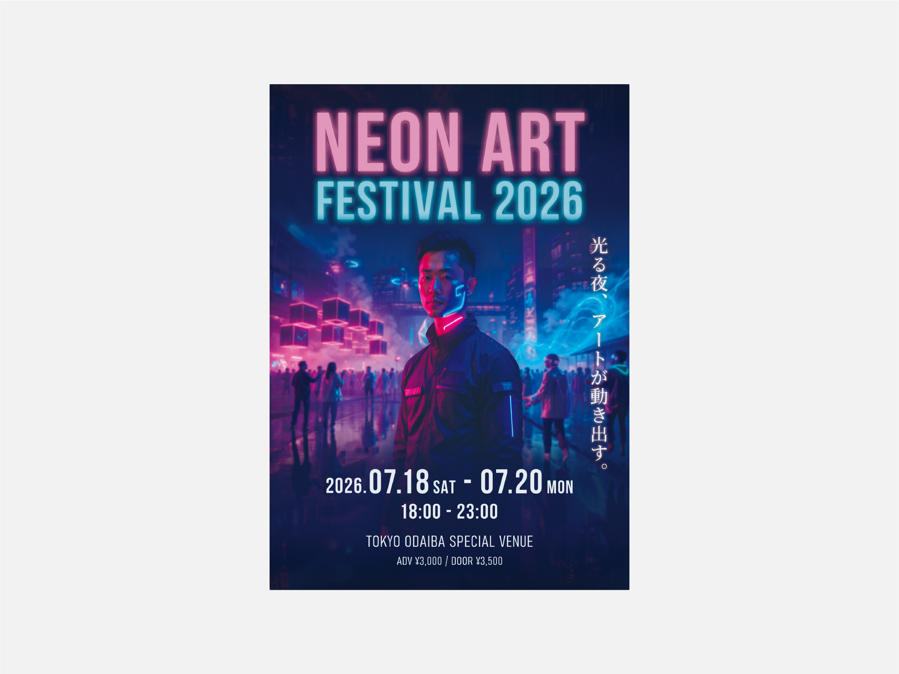
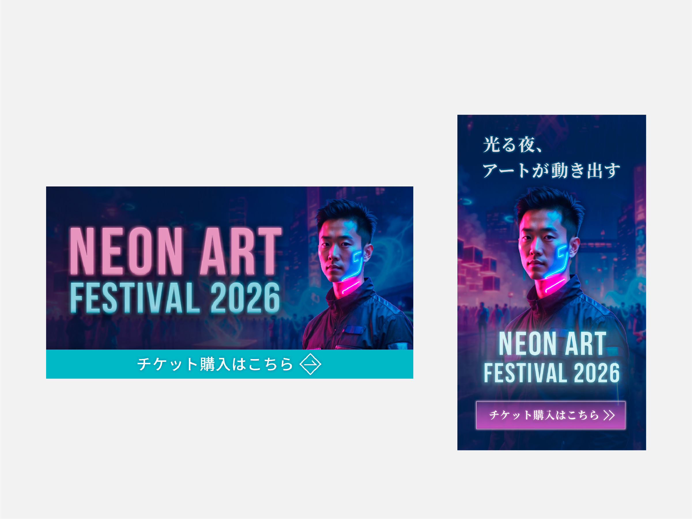
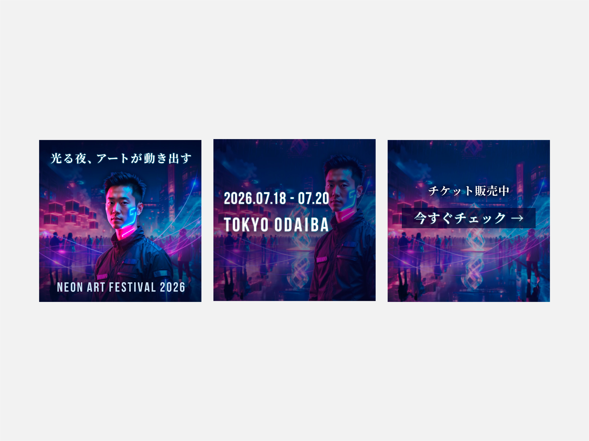
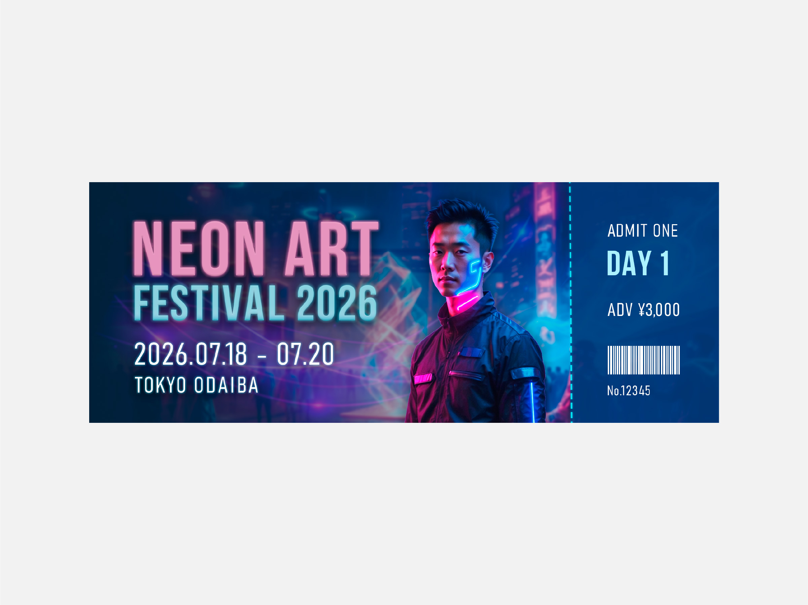

ネオンイベント
Event Visual Design





Details
- 制作期間
- 約1週間
- 使用ツール
- Illustrator / Photoshop / Firefly
- 担当範囲
- KV制作 / バナー制作 / SNS制作 /
チケット制作 / チラシ制作
Concept
近未来的なネオン表現を軸に、
イベントの世界観が統一して
伝わるよう制作しました。
ポスターをメインビジュアルとし、
バナー・SNS・チケットへ展開しています。
Process
メインビジュアル制作後、各媒体へ展開できるようサイズ・構成を調整しました。
媒体ごとに視認性を調整しながら、世界観の統一を意識しています。